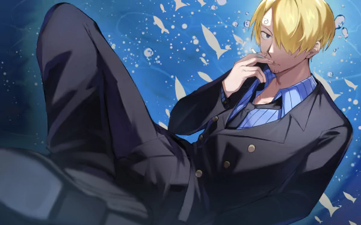

Vinsmoke Sanji (ヴィンスモーク・サンジ, Vinsumōku Sanji), also known as "Black Leg" Sanji (黒足のサンジ, Kuro Ashi no Sanji), is a fictional character in the One Piece franchise created by Eiichiro Oda. A native to the North Blue, Sanji grew up as part of the Vinsmoke family under his father Vinsmoke Judge, king of the Germa Kingdom, and mother Vinsmoke Sora. Living under a grueling father who only saw Sanji as a soldier, he escapes to Baratie where he learns to cook under “Red Leg” Zeff and learns his fighting style, which is characterized by the use of legs in combat. Sanji is the fifth member and the fourth to join Monkey D. Luffy's pirate crew as cook after the battle against Don Krieg.
